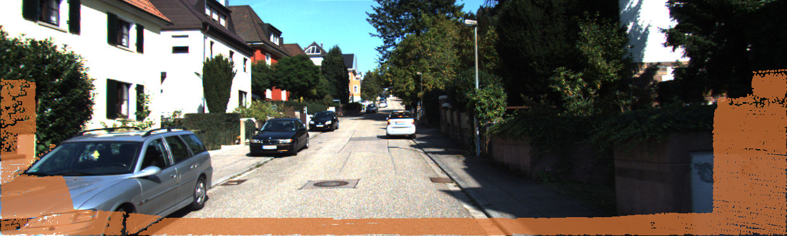
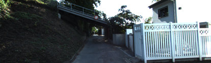
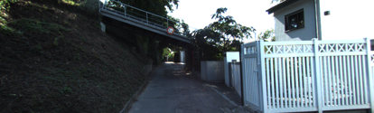
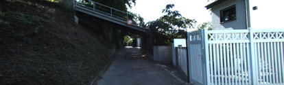
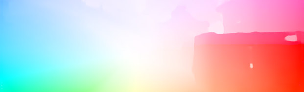
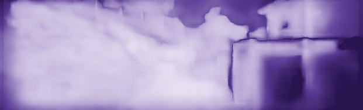
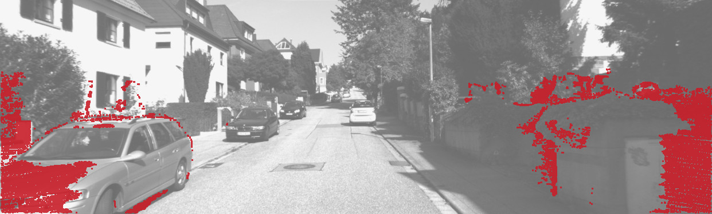
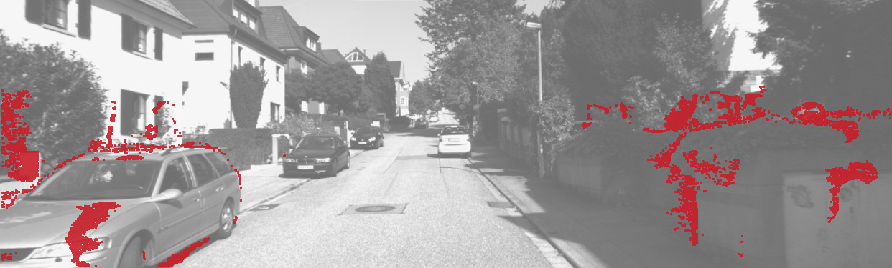
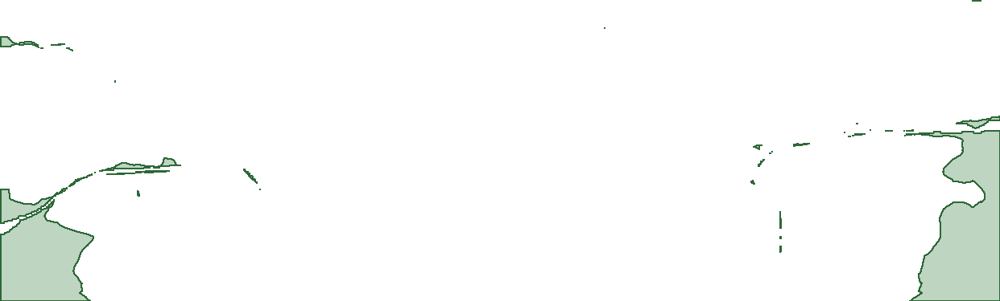

Where Photometry Is Blind
Inference-Time Geometric Correction of Unsupervised Optical Flow in Driving Scenes
TL;DR
Unsupervised optical flow learns from photometric consistency, so a pixel that leaves the next frame gets no direct training signal. RigidFill takes the camera motion and depth from a frozen network's own flow, reprojects the scene into the next frame, and uses that rigid flow only where the network is uncertain. On a held-out half of KITTI 2015, read once under a pre-specified plan, it lowers the released U²Flow model's outlier rate from 7.384% to 6.949%.
Abstract
Unsupervised optical flow learns from photometric consistency, so a pixel that leaves the next frame receives no direct signal. In a post-hoc analysis of the KITTI 2012 training set (KITTI-12), such out-of-frame pixels are 13.1% of labelled pixels but carry 44.0–44.5% of the outliers of three unsupervised networks. Much of what is needed to correct them is in a trained network's predictions: its confident correspondences give the camera motion and its backward flow the depth of these pixels, so reprojection predicts where they go. RigidFill substitutes this reprojected (rigid) flow for the network's flow only where the network's uncertainty is high. It changes no network weights, but its replacement source, gate form and thresholds were selected on 100 labelled development images. On a held-out half of the KITTI 2015 training set (KITTI-15), under a pre-specified plan, RigidFill lowers the released U²Flow model's outlier rate from 7.384% to 6.949%, a gain of 0.434 percentage points (95% confidence interval [0.259, 0.633]). On KITTI-12 (mostly in post-hoc analyses), it improves all three networks, reduces their out-of-frame outlier rate by a quarter or more and, over all images, is a better replacement than U²Flow's learned per-image fusion and than the external depth, reconstruction and flow sources we tested. The held-out comparison with the fusion is inconclusive. On development images, the gain is shown on the background, while on moving objects it is not distinguishable from zero; on the non-rigid scenes of MPI Sintel the correction increases the error.
Where photometry is blind
A photometric loss compares frame t with frame t+1 warped by the predicted flow. If a pixel's correspondence lies outside frame t+1, the warp has nothing to sample. No data term constrains the pixel's motion, so the network can only extrapolate it. We measured the consequence on the KITTI 2012 training set (194 images) for three networks trained without flow labels: U²Flow, ARFlow and Sun-RAFT.†
of labelled pixels leave the next frame
of each network's outliers are such pixels
More than five times
the outlier rate of the other pixels, for all three networks.†
Orange: out-of-frame. Each square stands for a thousandth of the pixels; the light squares show the spread across the three networks. Orange squares sit along the border because that is where such pixels lie in an image; the layout is schematic.

† Post hoc: designed after the first KITTI-12 evaluation, on images already used for a decision. The paper marks every such analysis.
Method
RigidFill corrects a frozen network at inference time. For camera-induced motion, the map from past to future is fixed by geometry: a point's depth follows from its backward correspondence, the camera motion from reliable correspondences elsewhere, and projecting the point into the next camera predicts its displacement, whether or not it stays in view. Every input comes from the flow network's own predictions, so no depth or pose network is needed. The walkthrough below uses the real intermediate results on KITTI-12 image 000034 (right part of the frame).
-
InTwo passes of the frozen network
U²Flow runs on frames (t, t+1) and (t−1, t). It returns the forward flow S, its predicted uncertainty α, and the backward flow Fb. Its weights are not changed.

Frame t−1 
Frame t 
Frame t+1 Backward flow Fb 
Forward flow S 
Uncertainty α -
1Camera motion from reliable correspondences
Correspondences that are visible, stay inside the frame and have low uncertainty (blue) go into a five-point solver inside RANSAC, once for each direction. The pose uses the least uncertain pixels; the correction will use the most uncertain ones.
-
2Depth from the backward flow
Every visible backward correspondence is triangulated, not only those used for the pose (bright is near; grey has no depth). A point that leaves the image between t and t+1 has no forward match, but under forward motion it is usually visible in frame t−1, so it still gets a depth Db.
-
3Rigid flow by reprojection
Each pixel with a backward depth is lifted to 3D and projected into camera t+1. The rigid flow T (same colour scale as S) is defined whether or not the point stays in view: the orange vectors end outside the image.
-
4Uncertainty gate
The gate (green) selects T only where the network is uncertain and T lies within dmax of S. Everywhere else the network's flow is kept.
-
OutCorrected flow
Outlier pixels (red) of the network alone and after RigidFill. The dark-green outline marks the replaced pixels; most of the remaining outliers lie where the gate did not switch. All tiles are intermediate results computed by RigidFill on this image.
Results
Fl is the KITTI outlier rate: the percentage of labelled pixels whose flow error exceeds both 3 px and 5% of the true flow magnitude (the KITTI 2015 outlier rule). Gains are the base Fl minus the corrected Fl, in percentage points (pp); positive is better. Intervals are 95% paired image-bootstrap intervals.
Held-out KITTI-15 half, 100 images
7.384% → 6.949%
Fl of the released U²Flow model. Gain 0.434 pp, 95% CI [0.259, 0.633]. Pre-specified primary comparison, labels read once.
KITTI-12 training set, 194 images
4.130% → 3.613%
Fl of U²Flow. Gain 0.517 pp, 95% CI [0.396, 0.644]. Pre-specified first KITTI-12 evaluation.
Out-of-frame pixels, KITTI-12
25–30% fewer
Drop in the out-of-frame outlier rate of all three networks, each with its own gate.†
Held-out KITTI-15, U²Flowpre-specified primary
0.434 [0.259, 0.633]
KITTI-12, U²Flowpre-specified
0.517 [0.396, 0.644]
Moving objects, KITTI-15 development halfout of fold, post hoc†
0.571 [−0.388, 1.849]
Outliers before and after



KITTI-12 image 000163 has the largest per-image reduction in outlier count. Red: outlier pixels. Drag the divider, or focus it and use the arrow keys.
The largest failure on KITTI-12. On a parked car near the border, the gate switches to a wrong rigid flow, and most of the added outliers are on pixels that leave the frame. KITTI-12 scenes are static, so this is a geometry error. Both examples are per-image extremes.
Images derived from the KITTI Vision Benchmark Suite (CC BY-NC-SA 3.0). Masks are dilated by one pixel for legibility.
Summary
| Evaluation | U²Flow | + RigidFill | Gain | Analysis |
|---|---|---|---|---|
| KITTI-15 held-out half (100 images) | 7.384 | 6.949 | 0.434 [0.259, 0.633] | pre-specified, primary |
| KITTI-12 (194 images) | 4.130 | 3.613 | 0.517 [0.396, 0.644] | pre-specified |
| HD1K | 1.571 | 1.548 | no harm beyond a declared margin; the rule barely acts | plan declared before scoring |
Other networks
With gates selected on the same KITTI-15 development half, RigidFill lowers the KITTI-12 Fl of ARFlow by 0.99 pp and of Sun-RAFT by 0.66 pp. For all three networks the out-of-frame outlier rate falls by 25–30%.† These procedures were designed after the U²Flow KITTI-12 result: evidence of transfer across networks, not a fresh test.
Against learned per-image fusion
U²Flow's own learned per-image fusion (+FF) also fills uncertain pixels from the previous frame, with a learned map. On KITTI-12, RigidFill is better at each of three +FF seeds, by 0.394, 0.383 and 0.385 pp, each with its 95% interval above zero.† On the held-out half, the pre-specified comparison with +FF is inconclusive.
HD1K
On HD1K, a driving dataset recorded in Heidelberg with no KITTI drive, the frozen rule barely acts: it replaces the flow on 0.36% of labelled pixels. With the outlier threshold scaled to HD1K's resolution, Fl moves from 1.571% to 1.548%, so the rule does not harm the network beyond a margin declared in advance. We read this as no harm beyond that margin on a second camera and city, with grayscale input and labels for the static scene only (data from an unofficial mirror, identified in the paper), not as a test of transfer.
RigidFill takes 0.42× the time of +FF and 46.7× the time of the network alone. It suits offline or accuracy-first use, not real-time inference.
† Post hoc: designed after the first KITTI-12 evaluation, on images already used for a decision.
Limitations
RigidFill assumes that the pixels it replaces move rigidly with the camera. Where that fails, it fails.
No measured gain on moving objects
On the moving objects of the KITTI-15 development half, the out-of-fold gain is 0.571 pp with a 95% interval of [−0.388, 1.849], which includes zero.† The depth of an independently moving point is computed under the camera's motion and is wrong, and the gate does not detect this.
It hurts on non-rigid scenes
On MPI Sintel, where characters and cameras move freely, the unchanged gate increases the error on both passes.
Three frames and calibration
It needs a third frame and calibrated intrinsics, and a mostly static scene.
It uses labels
No network weights change, but the replacement source, gate form and thresholds were selected on 100 labelled KITTI-15 development images.
It is slow
It takes 46.7 times the network's runtime: for offline or accuracy-first use, not real time.
Narrow held-out evidence
The held-out test covers one network and one fixed checkpoint, whose unsupervised training saw unlabelled neighbouring frames of these scenes. Its image-level bootstrap ignores that KITTI images come in correlated drives. The interval would reach zero only if a drive-level interval were 2.483 times as wide on its lower side; on the development half, resampling drives widens it by a factor of 1.034–1.206, so, if the held-out drives are as correlated (assumed, not checked), it would still exclude zero.†
Driving scenes only
All positive results are on driving scenes, and nearly all on KITTI. KITTI-12, where most analyses run, contains only static scenes: the most favourable case for a rigid fill.
Geometry errors
Its largest KITTI-12 failure, shown above, comes from a wrong rigid flow on a parked car at the image border.
BibTeX
@article{rigidfill2026,
title = {Where Photometry Is Blind: Inference-Time Geometric Correction
of Unsupervised Optical Flow in Driving Scenes},
author = {Authors to be announced},
journal = {Computer Vision and Image Understanding (under review)},
year = {2026}
}Acknowledgements and licences
We thank the authors of the KITTI benchmarks (Geiger, Lenz and Urtasun, CVPR 2012; Menze and Geiger, CVPR 2015), MPI Sintel (Butler et al., ECCV 2012) and HD1K (Kondermann et al., CVPR Workshops 2016) for their datasets, and the authors of U²Flow (Sun et al., CVPR 2026), ARFlow (Liu et al., CVPR 2020) and Sun-RAFT (Jahedi et al., WACV 2026) for releasing their code and checkpoints.
- Code in the repository: MIT licence. The files in
prereg/andsplits/are records of the pre-registration, published unchanged. - U²Flow's code and checkpoints are not included. They come from github.com/sunzunyi/U2FLOW, which ships no licence.
- Images on this page are derived from the KITTI Vision Benchmark Suite and shared under CC BY-NC-SA 3.0.
- Fonts: Barlow and Source Serif 4, SIL Open Font License 1.1, served from this site.
Use of AI tools. Coding agents based on large language models (Anthropic's Claude through Claude Code, and OpenAI's Codex) were used in this work to write and review code and to run experiments under decision rules recorded in advance; Claude also drafted and edited text, including this page. The authors reviewed the results and take responsibility for them; the paper's declaration gives the details.